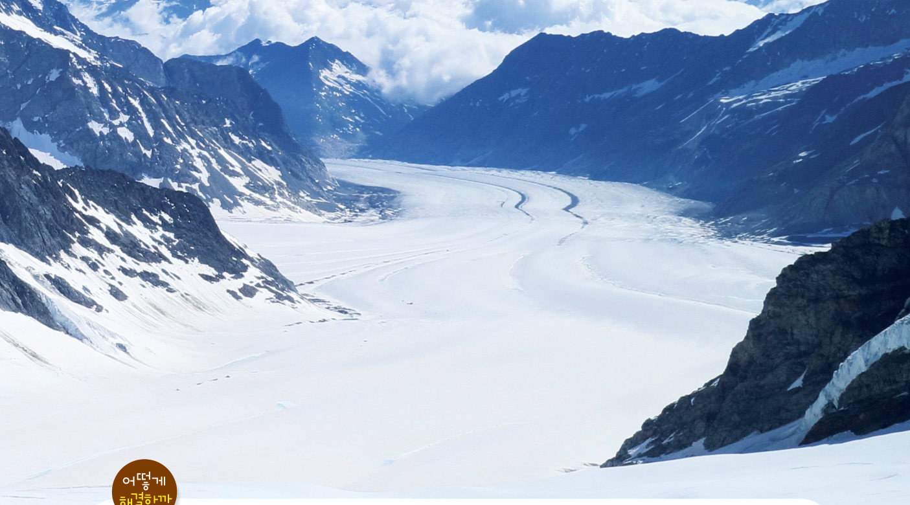
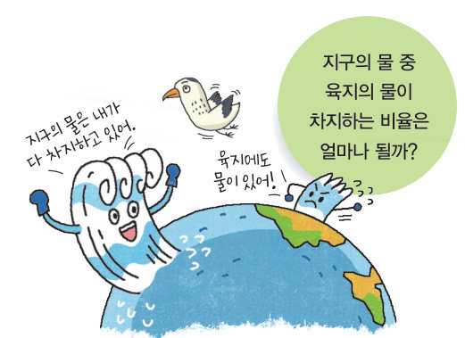
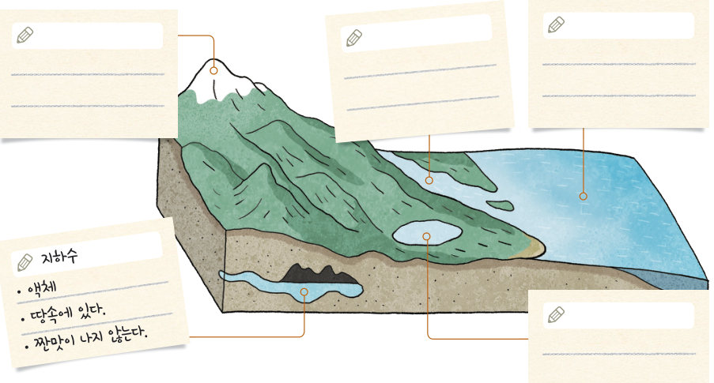
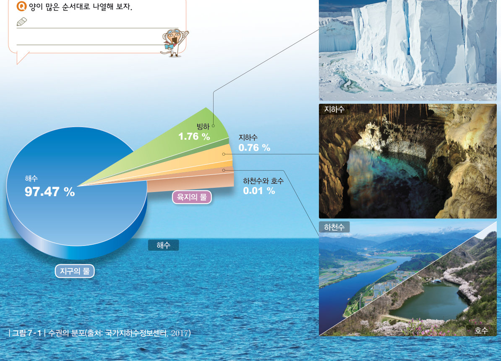

지구의 물 중 육지의 물이 차지하는 비율은 얼마나 될까? 수권을 이루는 물을 짠맛과 상태로 분류하고, 지구의 물을 1 L 페트병에 담아 해수·빙하·지하수·하천수와 호수로 나누어 따라 보자.
생활에 쓰이는 빙하 — 고산 지대나 극 지역에는 오랫동안 쌓인 눈이 굳어서 된 빙하가 있어. 이 빙하가 녹은 물을 빙하수라고 해. 빙하수는 마시기도 하고, 화장품을 만드는 데 활용하기도 한대. 빙하를 활용하는 까닭은 무엇일까?
지구에는 바다와 육지에 물이 분포하고 있다. 지구에 분포하는 물을 수권이라고 한다. (지구계를 이루는 요소에는 지권, 수권, 기권, 생물권, 외권이 있다.) 다음 활동으로 수권을 이루는 물의 종류와 특징을 알아보자.

| 해수 | |
| 빙하 | |
| 지하수 | |
| 하천수 | |
| 호수 | |
| 그레이트솔트 호수 |
| 해수 | |
| 빙하 | |
| 지하수 | |
| 하천수 | |
| 호수 |
수권 중 바다에 있는 물은 해수이고, 육지에 있는 물은 빙하, 지하수, 하천수, 호수 등이다. 해수는 짠맛이 나지만 육지에 있는 물은 대부분 짠맛이 나지 않는다. 짠맛이 나지 않는 물을 담수라고 한다. 담수의 가장 많은 양을 차지하는 빙하는 고체 상태로 고산 지대나 극 지역에 분포한다. 수권은 해수가 대부분을 차지하고, 두 번째로 빙하, 그 다음으로 지하수가 많은 양을 차지한다.

| ⑴ 빙하 | |
| ⑵ 하천수 | |
| ⑶ 호수 |
| ⑦ 수권의 대부분은 지하수가 차지한다. | |
| ⑧ 하천수와 호수는 육지의 물의 0.01 %를 차지한다. | |
| ⑨ 육지에 있는 물은 모두 담수이다. |
| 평가 기준 | 스스로 평가 |
|---|---|
| 수권을 이루는 물의 종류와 특징을 설명할 수 있다. | |
| 수권에서 해수와 육지의 물이 차지하는 비율을 비교할 수 있다. | |
| 활동에 적극적으로 참여하였다. |